2026-08-16T18:03:02+00:00
140-42 Seventh North St
The property is a well-maintained two-story residential building with a front porch, intact siding, and a neat lawn.
No open-data match yet
Open entry
Syracuse Property Atlas
A slow, sourced field notebook for city properties: parcel data, Street View, AI image observations, city open-data matches, tract context, and OpenStreetMap features.
Atlas map
Orange points are published entries. Gray points are parcels still waiting in the queue. Select a point to open the property popup.
Published properties
Each entry is generated by the hourly pipeline. AI notes are treated as field observations, not official code findings.
2026-08-16T18:03:02+00:00
The property is a well-maintained two-story residential building with a front porch, intact siding, and a neat lawn.

2026-08-16T17:03:01+00:00
{ "summary": "The property features a two-story residential structure with a white exterior, a dark roof, and a front porch, situated on a lot with a green lawn and a large tree.", "property_type_guess": "single_family", "visible_conditions": [ "A two-story residential structure with a white exterior finish.", "A dark-colored gabled roof with a dormer featuring multiple small windows.", "A front porch with a gabled roof, wooden railings, and steps leading to an orange-red front door.", "Windows are visible on the front porch and within the dormer.", "The property includes a green lawn, though some areas appear to have thinner grass or bare soil.", "A large deciduous tree with green foliage is situated on the right side of the property, partially obscuring the view of an adjacent structure.", "Utility lines are visible in the upper portion of the image." ве}, "condition_scores": { "roof": "good", "siding_or_facade": "fair", "windows_doors": "good", "porch_or_entry": "fair", "yard_or_lot": "fair", "trash_debris": "none_visible", "vegetation_overgrowth": "none_visible" }, "visible_flags": { "boarded_windows_or_doors": "no", "fire_damage_visible": "no", "structural_damage_visible": "no", "vacancy_signs_visible": "no", "active_construction_visible": "no" }, "possible_unrecorded_issues": [ "Minor wear or discoloration may be present on the white exterior siding.", "Some bare patches are visible within the lawn area." ], "image_annotations": [], "needs_human_review": "false", "confidence": "high", "caveats": [] }

2026-08-16T16:03:04+00:00
{ "summary": "A street-level view showing a small single-story residential structure partially obscured by a tree, alongside a two-story residential building with a paved driveway.", "property_type_guess": "unclear", "visible_conditions": [ "A large tree partially obstructs the view of the single-story structure on the left.", "The single-story structure features a small front porch with a railing.", "The two-story structure on the right has white siding, a garage, and concrete steps leading to the entrance.", "The lawn appears mowed and maintained, with a garden bed in front of the smaller structure.", "A paved driveway runs between the structures." ], "condition_scores": { "roof": "unclear", "siding_or_facade": "good", "windows_doors": "good", "porch_or_entry": "good", "yard_or_lot": "good", "trash_debris": "none_visible", "vegetation_overgrowth": "none_visible" }, "visible_flags": { "boarded_windows_or_doors": "no", "fire_damage_visible": "no", "structural_damage_visible": "no", "vacancy_signs_visible": "no", "active_construction_visible": "no" }, "possible_unrecorded_issues": [], "image_annotations": [], "needs_human_review": false, "confidence": "medium", "caveats": [ "Multiple structures are visible in the image, making it unclear which specific building corresponds to 132 SEVENTH NORTH ST.", "A large tree partially obstructs the facade of the single-story structure on the left." ] } }

2026-08-16T15:03:13+00:00
A two-story single-family home with white siding, an attached garage, a paved driveway, and a well-maintained front lawn.

2026-08-16T14:44:36+00:00
A two-story residential duplex with a front porch and upper balcony, featuring a maintained lawn and showing no obvious exterior structural issues.

2026-08-16T08:26:40+00:00
A single-family residential property with a well-maintained front yard, partially obscured by a large foreground tree.
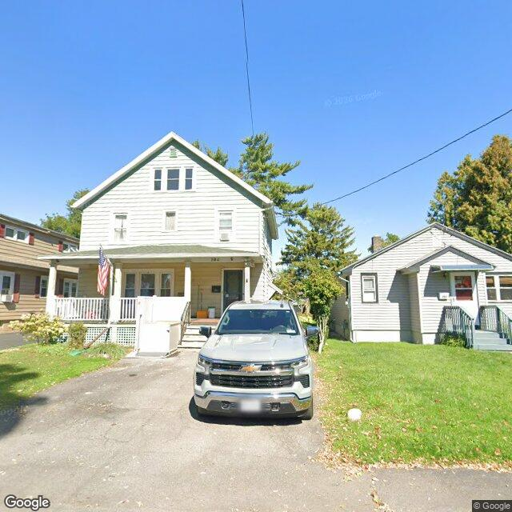
2026-08-16T00:22:43+00:00
The property is a multi-story residential building with light-colored siding, a front porch, and a paved driveway, appearing to be in generally well-maintained condition.
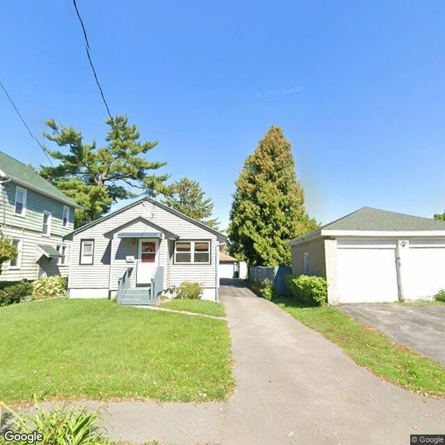
2026-08-15T18:41:56+00:00
A single-story residential home with light-colored siding, a small front porch, a paved driveway, and a detached garage, all appearing in well-maintained condition.
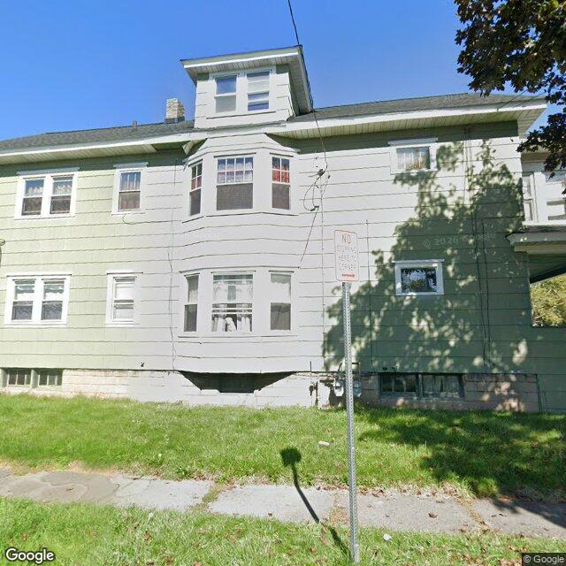
2026-08-15T15:02:55+00:00
A multi-story residential building with light green siding and a grass lawn, showing no obvious exterior structural issues from the street view.
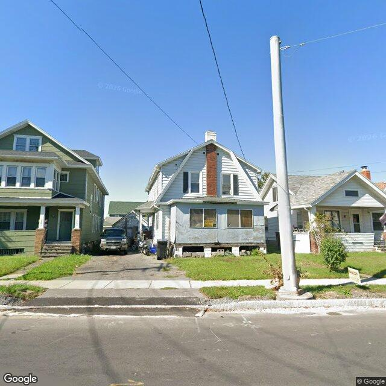
2026-08-15T14:16:00+00:00
A residential building with a gambrel roof and a central chimney, featuring an enclosed front porch with visible weathering and exposed foundation piers.
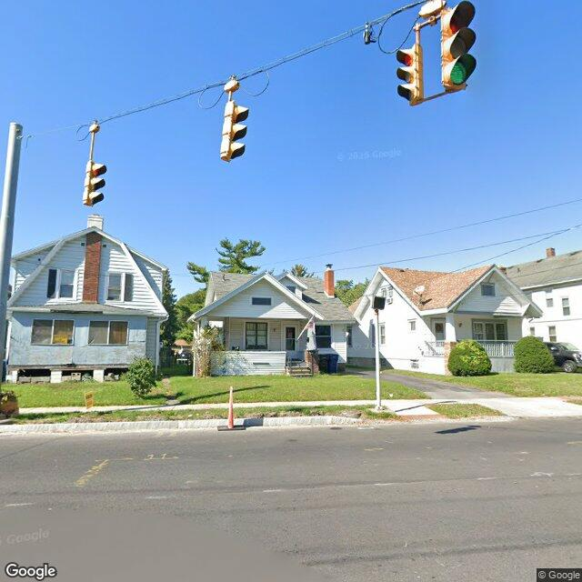
2026-08-15T01:03:08+00:00
The visible exterior of the property appears to show areas of deteriorated siding, possibly covered windows, and a raised foundation with visible supports.
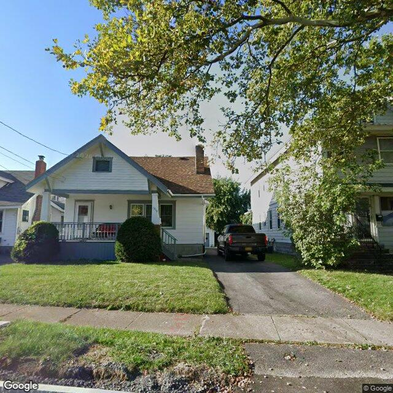
2026-08-15T00:02:52+00:00
A single-family bungalow-style home with white siding, a front porch, and a maintained lawn, partially shaded by a large tree.
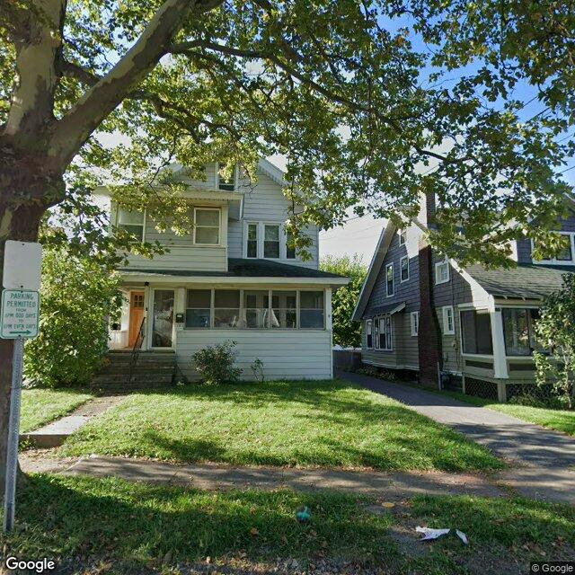
2026-08-14T23:03:20+00:00
The property appears to be a two-story residential structure with light-colored siding, a screened-in front porch, and a well-maintained lawn.
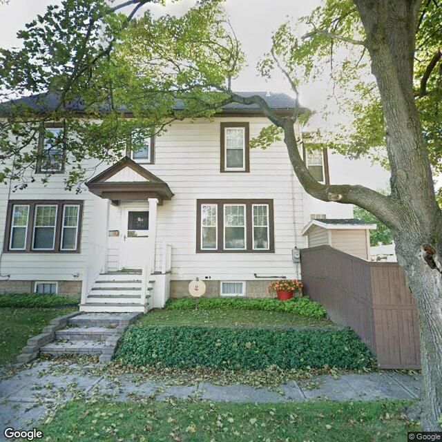
2026-08-14T22:03:14+00:00
The visible exterior of the property shows a well-maintained two-story residential structure with intact siding, windows, and a clean yard.
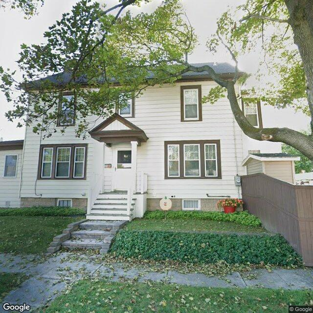
2026-08-14T21:03:01+00:00
A well-maintained two-story residential building with light siding, intact windows, and a neat front yard with established landscaping.
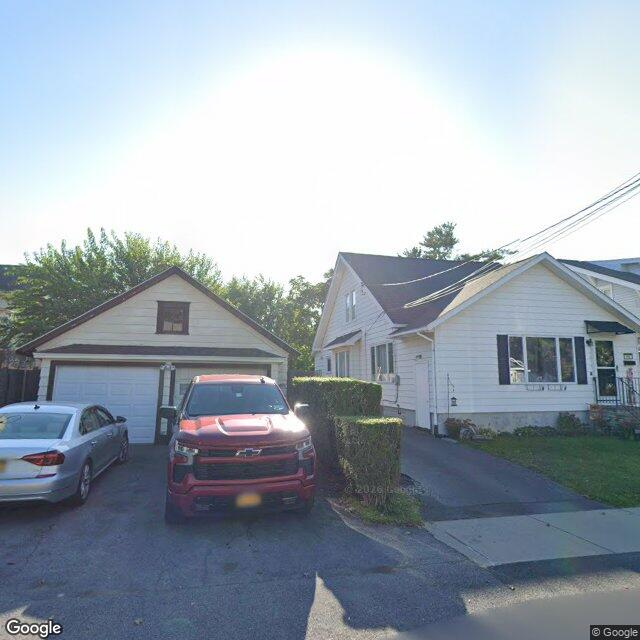
2026-08-14T20:03:13+00:00
The property appears to be a single-family residence with a detached garage, exhibiting generally fair to good exterior conditions.
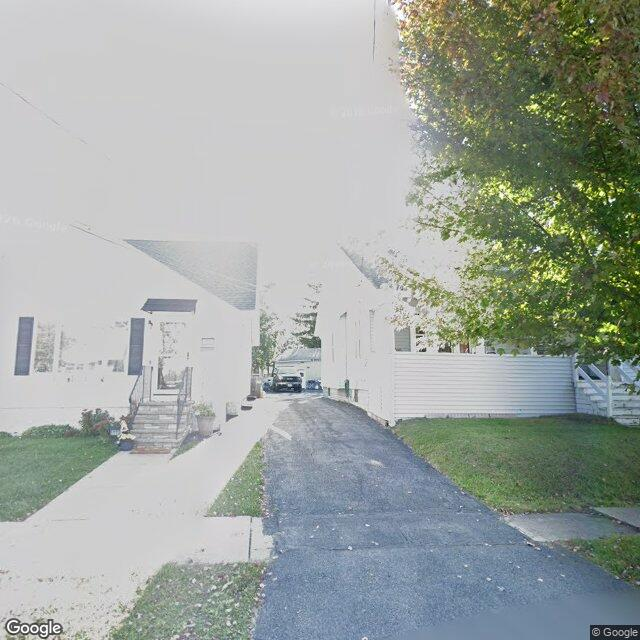
2026-08-14T19:03:10+00:00
A street-level view shows two residential structures separated by a paved driveway, with significant lens glare obscuring the upper portions of the buildings.
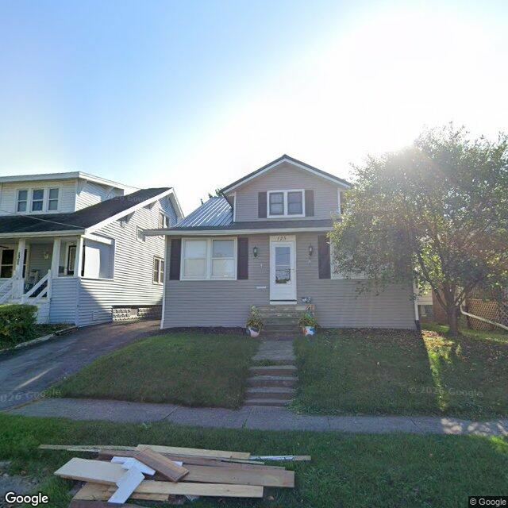
2026-08-14T18:03:11+00:00
A well-maintained one-and-a-half-story residential home with gray siding, a mowed lawn, and a pile of lumber on the curb-side grass strip.
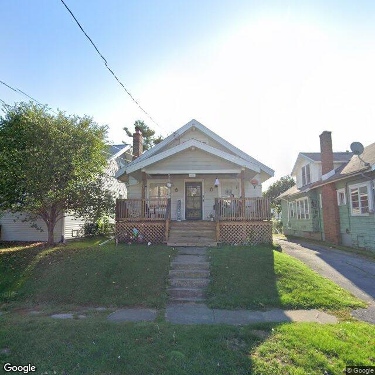
2026-08-14T17:03:20+00:00
A single-story bungalow-style house with a front porch, elevated on a sloped, maintained lawn.
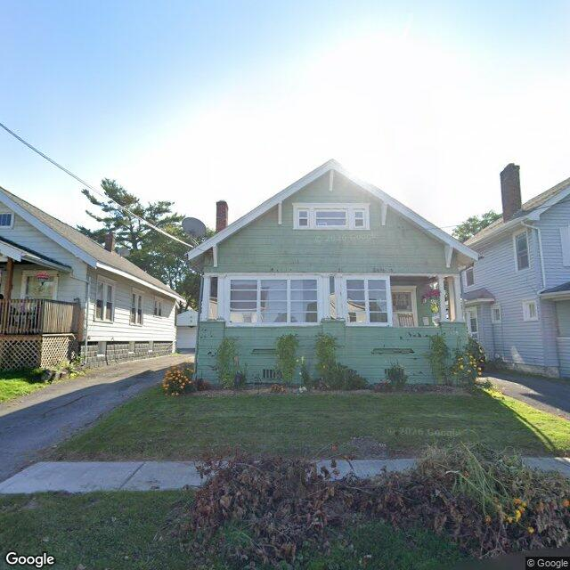
2026-08-14T16:03:05+00:00
The image displays a single-family residence with green siding, a front porch, and visible landscaping, alongside a notable accumulation of organic debris near the public sidewalk.
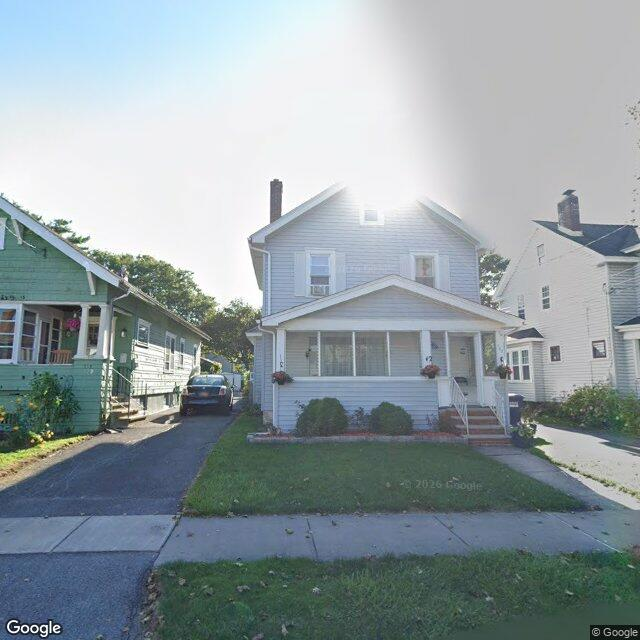
2026-08-14T15:03:27+00:00
A two-story residential duplex with light-colored siding, a front porch, and a maintained front lawn, partially obscured by strong sun glare.
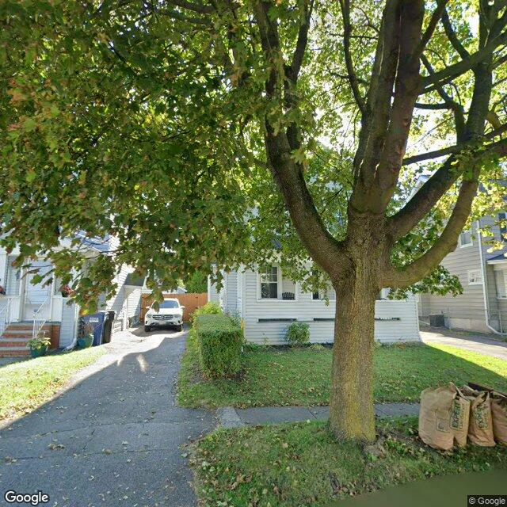
2026-08-14T14:04:42+00:00
The visible exterior of the property appears to be a residential structure with a generally maintained yard, though the view of the building is significantly obstructed by a large tree.
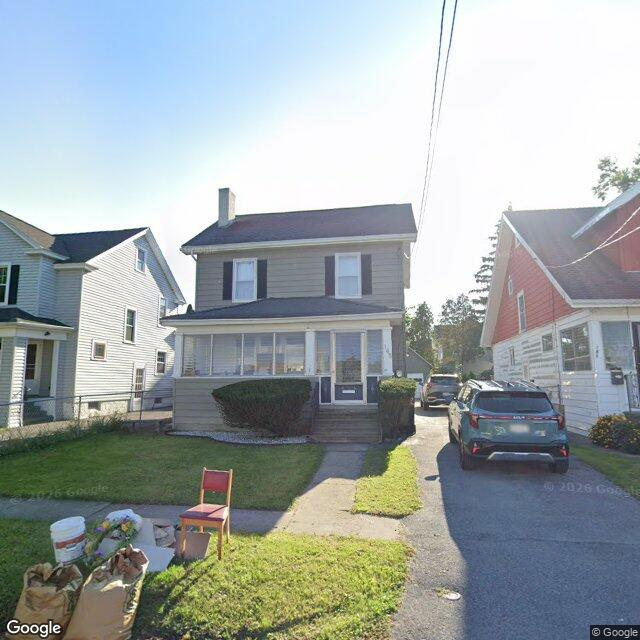
2026-08-14T14:01:09+00:00
A two-story single-family home with grey siding, an enclosed front porch, and a maintained lawn featuring some temporary yard items in the foreground.
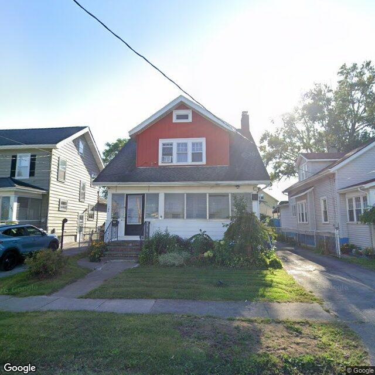
2026-08-14T13:56:14+00:00
A one-and-a-half-story residential structure featuring a red upper gable, white siding, an enclosed front porch, and established front yard landscaping.
Method
The database starts with Syracuse parcels and enriches each selected property with vacant, rental registry, code violation, and unfit-property feeds. Census geocoding adds tract-level ACS context, OpenStreetMap adds nearby mapped features, and optional image analysis adds a visible-condition read when a free or paid image source is configured.